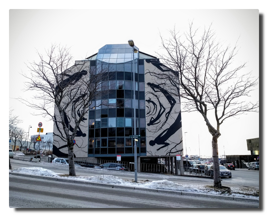

Love Boat - The Real Story. Honningsvåg
Tag 6. Das Ende der Welt
Der vergangene lange Tag bringen mich dazu, bis 7 Uhr auszuschlafen. Wir werden noch bis zum Abend auf See unterwegs sein und dann im Hafen von Honningsvåg übernachten.
Alle sind nach den Erlebnissen bester Stimmung. In unserer Reisegruppe ist aktuell niemand seekrank und auch unser Jüngster scheint sich nach Anlaufschwierigkeiten etwas eingelebt zu haben, er klatscht zum Frühstück das Personal ab und verabredet sich für später im Kids Club.
 |
|---|
| Nordkapumfahrung in mystischem Licht |
Am Nachmittag passieren wir das Nordkap bei Sonnenuntergang. Die Sicht ist klar und man kann von weitem die Nordkaphalle und den Globus sehen. Ich stehe fast eine Stunde auf Deck 6 und genieße die Aussicht.
Später wird es windig und es schneit. Die nächtlichen Nordkaplandausflüge werden abgesagt, weil die Straße aufgrund des Schneegestöbers nicht freigegeben ist. Ob der Ausflug morgen klappt, ist noch unsicher.
K. und ich schlendern durch das leere Honningsvåg. Wir schauen uns genauer das Schiff an und sehen: hinter unseren Kabinen befindet sich der Crew-Nachtclub, das erklärt einiges...
 |
|---|
| Honningsvåg im Schnee. Ein Schiff. |
Dann grüne Schleier. Polarlichter. Als wir aufs Schiff zurückkehren, geht das Spektakel richtig los. Grüne, auch ein wenig rote Nordlichter tanzen stundenlang für uns am Himmel.
 |
|---|
 |
| Not all heros wear capes. Bamse, the canine war hero. |
Tag 7. Nordkap
Es liegen zwei perfekte Polarlichtkreuzfahrttage hinter uns. Alles, was nun noch folgt, ist nur noch Deko auf dem Sahnehäubchen.
Es geht auf zum Landausflug zum Nordkap, das wir bereits gestern von der Wasserseite zu sehen bekamen. Dort oben war es kalt und windig und die Sicht war klar und so war der Ort auch ohne Mitternachtssonne definitiv den Besuch wert.
 |
|---|
| Hilsener fra Nordkapp! Touristenlevel over 9000! |
Gegen Abend wird der Seegang wieder rauher und so lasse ich den Tag gemütlich in der AIDA Bar ausklingen.
 |
|---|
| Es ist alles so furchtbar... |
Love Boat - The Real Story. Bodø
Tag 5. Land in Sicht
Mit einer frühmorgendlichen Sportrunde lasse ich den Tag beginnen. Als das Schiff sich dann langsam unserem zweiten Hafen Bodø nähert, bietet sich um uns herum ein atemberaubend schönes Panorama. Dieser Tag verspricht großartig zu werden.
 |
|---|
| Postkartenmotiv |
Nach der letzten unruhigen Nacht sind die Passagiere heiß darauf, das Schiff zu verlassen. Die Ausflugsbusse stehen bereit und trotz der Information, dass Bodø eine hässliche Stadt sei, macht sich unsere Reisegruppe zum üblichen Fußmarsch auf.
Die angepriesene Hässlichkeit der Stadt ist ihrer nahezu vollständigen Zerstörung bei einem deutschen Luftangriff im Jahr 1940 geschuldet. Viele Gebäude wurden durch eher untraditionelle Gebäude ersetzt und so erinnert die zentrale Fußgängerzone an die deutscher Städte.
Auch in einem Reisebericht, den ich nach der Rückkehr las, war man geradezu empört, in dieser unansehnlichen Stadt Halt gemacht zu haben. Das hat mich im Nachhinein nochmal zusätzlich verärgert: will man auf so einer Reise nun Land und Leute sehen oder was? Norwegen ist wie der Rest der Welt kein Märchenland und besteht aus mehr als schöner Landschaft und überteuerten Schlittenhundfahrten für Touristen.
Wenn man ein wenig die Augen aufmacht, kann man auch in Bodø Entdeckungen machen, etwa die lokalen Streetart-Kunstwerke.
|  |
|---|
| Streetart: "Malstrøm" von David de la Mano |
Während unseres Erkundungsrundgangs erspähe ich einen Supermarkt - es ist Zeit, mein Norwegisch auf die Probe zu stellen und norwegische Spezialitäten zu erwerben: Brunost (brauner Käse) und Lefsegodt (weiches Gebäck mit einer Art Frischkäsecreme).
 |
|---|
| Geht ne Deutsche in Norwegen in einen Kiosk. Hitler. ROTFL. (leider etwas unscharf) |
Am Nachmittag gehe ich noch einmal allein durch die Stadt, genieße die Unbekanntheit der Umgebung, gehe neugierig durch die Straßen und bin pünktlich zum Abendessen zurück an Bord.
 |
|---|
| Oh, wie schön ist Bodø |
Leinen los, wir fahren weiter nach Norden!
Ankes anekdotischer Tipp
Ab dem dritten Tag vermisste ich das Radfahren. In Kombination mit der Neigung, die Umgebung selbständig zu erkunden, durchfuhr mich ein Gedanke: Ein Faltrad hätte man mitnehmen sollen. Je Passagier kann man zwei große Gepäckstücke aufgeben. Wenn man wie ich mit einem auskommt, sollte es theoretisch kein Problem sein, ein ordentlich verpacktes Faltrad (± 12 kg) mitzunehmen. Dies vergrößert den eigenen Radius an Land ungemein.
Die Nacht der Nächte
Der Abend beginnt ruhig. Dies sollte sich allerdings innerhalb kürzester Zeit ändern. Seit der diffizilen Wetterlage am zweiten Seetag sind wir Bordportal-süchtig - Geschwindigkeit, Kurs, Wind, wir sind informiert.
K. traut ihren Augen kaum: auf dem Bild der Bugcam sieht man grüne Schleier am Himmel. M. wird nach oben geschickt, um die Lage zu evaluieren. In Ungläubigkeit und Aufgeregtheit ziehe ich mich warm an.
Wir betreten Deck 11, dort haben sich bereits einige Leute mit ihrem teuren Fotoequipment in Position begeben. Der Himmel ist bewölkt, einen Tag vor Vollmond strahlt der Mond die Meeresoberfläche und Landmassen der Lofoten an. Das allein erzeugt eine atemberaubende, mystische Atmosphäre.
Es wird getuschelt, man schielt sich auf die Displays. Jemand zeigt auf sein Kameradisplay und sagt "Da ist es." Wir starren in den Himmel und sehen: nichts.
Wir starren weiter und beginnen, einen Unterschied zwischen den vom Mond hell angeleuchteten Wolken und diffusen Schleiern zu sehen. Ja, die Schleier sind grünlich und sie bewegen sich leicht. Das soll es also sein?
Wir verharren weiter in der Winternacht erstarrt im Starren in den Nachthimmel. Die Wolken lichten sich tatsächlich. Die Wettervorhersage sagt für die nächsten Tage Wolken und Niederschläge an, das Islandtief zieht uns immer noch hinterher, und so fällt irgendwo der Satz "Heute ist die Nacht der Nächte."
Deck 11 erwacht zum Leben. Die Sichtung der Polarlichter wird in den Bauch von Stahl-Moby Dick weitergetragen. Die Kälte treibt die Leute immer wieder zum Aufwärmen hinein und der Grund dieser Reise wieder hinaus.
Der Himmel gibt grünes Licht. Frost und Freude, die treuen Begleiter der Polarlichter, bleiben uns bis etwa 2 Uhr erhalten.
Was für ein großartiger Tag.